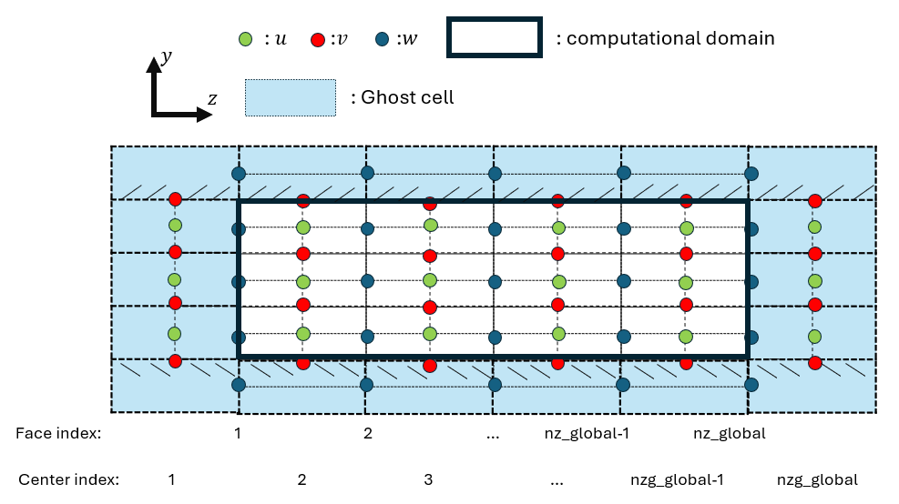

Global Index and Local Index Rule for MPI Code
In the fully-coupled FMI code, a staggered grid arrangement is adopted to improve numerical stability and enforce the incompressibility constraint. In this layout, different flow variables are stored at different spatial locations within each control volume.
Schematic Overview

Figure 1: Illustration of staggered grid indexing and ghost-cell layout in the wall-normal direction.
| Symbol | Quantity |
|---|---|
| Green dots | Streamwise velocity u |
| Red dots | Wall-normal velocity v |
| Blue dots | Spanwise velocity w |
| Solid black line | Computational domain |
| light blue region | Ghost cells |
Staggered Grid Arrangement
In a staggered grid:
- Scalar quantities (e.g., pressure \(p\)) are stored at cell centers
- Velocity components are stored at corresponding cell faces:
| Variable | Direction | Storage Location |
|---|---|---|
| u | Streamwise | Streamwise faces |
| v | Wall-normal | Wall-normal faces |
| w | Spanwise | Spanwise faces |
This arrangement avoids pressure–velocity decoupling and improves numerical robustness. Since the MPI partition is performed in the spanwise direction (z), the index conventions below focus on the z direction.
Global Indexing in the Spanwise Direction (z)
Face Index — Spanwise Velocity w
Spanwise velocity w is located on cell faces and uses the face index:
k = 1, 2, 3, ..., nz_global
Center Index — Streamwise u and Wall-normal v Velocities
Streamwise velocity \(u\) and wall-normal velocity \(v\) are located at cell centers and use the center index:
k = 1, 2, 3, ..., nzg_global
nzg_global denotes the total number of cell centers in the spanwise direction globally,
while nz_global denotes the total number of cell faces. In general, nzg_global = nz_global + 1
when ghost cells are accounted for — confirm with your domain setup.
MPI Partitioning in the Spanwise Direction
The domain is decomposed along the spanwise (\(z\)) direction across nprocs MPI ranks
(indexed 0 to nprocs-1). The decomposition is based on the number of
interior spanwise slices per rank:
nslices_z = (nz_global - 2) / nprocs
The two boundary planes (k=1 and k=nz_global) are excluded from the
even split, hence the nz_global - 2 term. Each rank therefore owns
nslices_z interior planes, plus ghost cells on each side.
Global Index Ranges per Rank
For each rank i, the global start and end indices are defined as:
Face index (spanwise velocity \(w\), defined on \(z\)-faces):
k1_global(i) = i * nslices_z + 1
k2_global(i) = k1_global(i) + nslices_z + 1
Center index (velocities \(u\), \(v\) and scalar \(c\), defined on \(z\)-centers):
kg1_global(i) = i * nslices_z + 1
kg2_global(i) = kg1_global(i) + nslices_z + 1
!!! note The last rank is extended to absorb any remainder from the global domain:
k2_global (nprocs-1) = nz_global
kg2_global(nprocs-1) = nz_global + 1
Local Array Size
From the global ranges, each rank computes its local array sizes:
Face-based (w):
nz = k2_global(myid) - k1_global(myid) + 1 ! = nslices_z + 2
Center-based (u,v,c):
nzg = kg2_global(myid) - kg1_global(myid) + 1 ! = nslices_z + 2
nzm = nzg - 2 ! interior centers only
Both nz and nzg equal nslices_z + 2, where the extra 2 accounts for
one ghost cell layer on each side of the local slab.
Ghost Cell Overlap Between Ranks
The +1 offset in k2_global and kg2_global causes adjacent ranks to
overlap by two global planes, forming the ghost cell regions:
Global k: 1 2 3 ... k2(i)-1 k2(i) k1(i+1) k1(i+1)+1 ...
├────────────────────────────────┤
Rank i: k1(i) k2(i)
ghost ──►
◄── ghost
├────────────────────────────────┤
Rank i+1: k1(i+1) k2(i+1)
Concretely, for a domain with nz_global=10 and nprocs=2 (nslices_z=4):
| Rank | k1_global |
k2_global |
Global planes owned | Local index k |
|---|---|---|---|---|
| 0 | 1 | 6 | 1 – 6 | 1 – 6 |
| 1 | 5 | 10 | 5 – 10 | 1 – 6 |
Global planes 5 and 6 are owned by both ranks — plane 6 of rank 0 is
the upper ghost (k = nz), and plane 5 of rank 1 is the lower ghost
(k = 1).
The mapping between local and global indices is:
k_global = k1_global(myid) + k_local - 1
k_local = k_global - k1_global(myid) + 1
Ghost Cell Update and Periodic BC
Ghost cells are kept up to date by two subroutines in the source file boundary_condition.f90:
update_ghost_interior_planes(F, id)— exchanges the overlapping ghost planes between neighboring ranks after each time step.apply_periodic_bc_z(F, id)— enforces spanwise periodicity by wrapping data between rank0and ranknprocs-1.